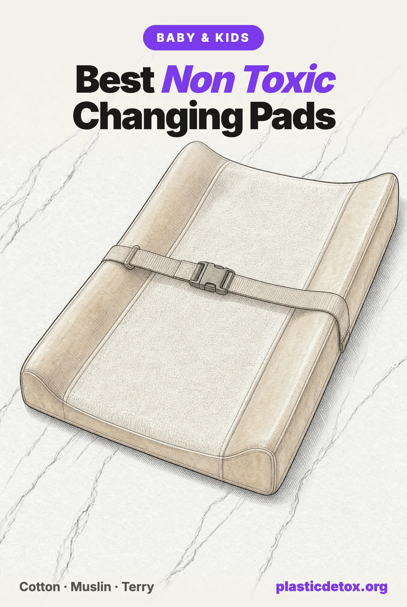

Best Non Toxic Changing Pads: The Disposable Liners That Don't Pass and the Washable Covers That Do (2026)

The 30 Second Summary
- The pad itself never fully passes. Even Naturepedic's certified organic contoured pad names polyester in the seams a baby's skin can reach, which is why every standalone changing pad we have reviewed lands at use carefully, not good.
- Neither does any disposable liner we checked. Peekapoo and Modera both name the polyethylene backing that faces the table, then call the layer against the baby only "nonwoven," a manufacturing method, not a material. It can be polypropylene, polyester, viscose, or cotton, and neither brand will say which.
- The fix is a liner or a cover, not a new pad. A washable liner whose only synthetic layer faces away from the baby needs no separate pad at all; a cotton cover worn over the pad you already own works just as well if you'd rather keep it.
- Want a liner? Our top pick is the Biloban cotton terry liner, 4.5 stars across 500+ ratings, which names its TPU backing instead of hiding it. The TILLYOU flannel liner is the budget option, same two ply construction.
- Want a cover instead? The Burt's Bees Baby organic cotton jersey cover is our pick, from an established brand with a real review history. The MakeMake Organics quilted cover adds cushioning with organic cotton batting instead of polyester.
A changing pad is one of the highest contact surfaces in a nursery, and one of the least examined. A baby is changed an estimated 6,000 to 7,000 times before potty training, most of it at home, bare skin against the same few square feet of vinyl, polyethylene film, or disposable liner. Nobody swaps it out between uses the way a onesie gets swapped for a clean one. It sits there, one surface, for years.
We already flag the mainstream padded changing pad in our nursery setup guide and our baby and toddler guide: even the certified organic version wraps a food grade polyethylene foam core in cotton, then coats that cotton in more polyethylene to make it wipeable. This guide goes further and checks the two other things parents reach for, the disposable liners sold to protect the pad and the washable covers sold to replace it. One category fails outright. The other, done right, actually works.
1. Why the Changing Pad Gets Skipped
Every baby product guide on this site checks the diaper, the wipes, and the cream. Almost none checks the pad underneath, even though it meets bare skin at every single change, for as long as a child is in diapers, on a surface that never gets laundered the way a cover or cloth does.
2. The Pad Itself: Cotton on Top, Plastic Underneath
The clearest example is also the most certified one. Naturepedic's organic contoured changing pad states its own materials plainly: GOTS certified organic cotton, polyethylene waterproofing derived from non-GMO sugarcane, food grade polyethylene foam, polypropylene interlinings, straps and buckles, and polyester seam bindings and sewing thread. The cotton claim is real, and plant derived polyethylene is a genuine improvement over the PVC vinyl covering most changing pads sold everywhere else.
But polyester binds the seams a baby's skin can reach, and our rule scores only the parts of an object that skin actually touches, not the parts that never contact it. That puts this pad at use carefully rather than good, the same rating every other standalone changing pad we have reviewed has received. Certification changed the chemistry of the waterproofing. It did not remove plastic from the seams.
3. Disposable Liners: Nonwoven Is Not a Material
Disposable liners are marketed as the tidy fix: lay one down, use it once, throw it away, and nothing on the pad below touches your baby directly. We checked the two best documented sellers on Amazon, Peekapoo and Modera, and both build the same way: the backing that faces the changing table is named, polyethylene in both cases, and the layer against the baby is named only as a "nonwoven top layer." The specifics are below.
Nonwoven describes how a fabric is constructed, fibers pressed or bonded together rather than woven or knit, not what fiber it is made from. A nonwoven top layer can be polypropylene, polyethylene, polyester, viscose, or cotton, five different answers with five different implications for a baby's skin. Makers name the fiber constantly when it helps them sell the product, cotton and bamboo are all over this aisle's marketing. Going quiet on exactly the layer a baby's bare skin presses into is not incomplete labeling. It is the one material fact in the listing the maker chose not to give.
Peekapoo Disposable Changing Pad Liners
Better documented than most disposable liners: fragrance free, no dyes or inks, and the maker names the polyethylene backing and says it is BPA and PFAS free, with third party testing to CPSIA lead and phthalate standards. The gap is the layer that actually touches the baby, given only as "nonwoven top layer." That is how it was made, not what it is made of, and a nonwoven can be polypropylene, polyester, viscose, or cotton. Name the fiber and this passes.
Modera Disposable Changing Pad Liners
Sold as "Organic Cotton Enhanced," and enhanced means the layer a baby lies on is mostly something else that the maker never names. "Chemical Free Non-Woven Fiber" is a claim about processing, not a material. The waterproof backing faces the changing table rather than the baby, so it is noted and not scored. Separately, Modera's own Pack N Play mattress was recalled in October 2025 for an entrapment hazard, a different product from this liner.
It is not only these two. Every other disposable liner we priced out during this research used one of the same two builds: a silent nonwoven top layer over a named polyethylene film, or a padded paper sheet whose absorbent core chemistry is not named either. We did not find one that names the fiber against a baby's skin.
4. What Actually Passes: Facing Away vs. Sitting Inside
A washable cover or liner does the same job differently from a disposable one. Instead of a barrier layer that never touches skin, the fabric a baby lies on becomes the entire contact surface, so there is nowhere for a hidden material to sit unnamed. That does not mean the fabric has to be cotton straight through with nothing else anywhere in it. It means whatever sits behind the cotton has to face away from the baby, not be sandwiched into the part a body presses against.
Biloban's washable liner shows the version that works: cotton terry on top, a TPU film on the back, nothing in between. The maker names both layers, and the TPU faces the changing pad rather than the baby, so under our rule it is noted and not scored, the same way a mattress cover's backing is not scored. It carries an OEKO-TEX Standard 100 certificate. One disclosure worth carrying over: Biloban recalled about 20,000 Pack N Play mattresses in 2024 for a suffocation hazard, a different product from this liner.
American Baby Company's changing pad cover shows the version that does not work: its listing states a "100% organic cotton top layer, quilted polyester middle layer, waterproof, breathable polyester back layer." That is three layers, not two. The polyester in the middle is quilting batten stitched between two fabrics, sandwiched into what a body presses against rather than facing away from it, which is different from a flat backing on the underside. We rate it use carefully for the same reason as the Naturepedic pad: a synthetic sits in the part of the product a baby's skin effectively reaches, not just anywhere in the object.
| Product | What's named | What's not | Verdict |
|---|---|---|---|
| Standard vinyl changing pad | PVC cover over foam | Plasticizer chemistry | Use carefully |
| Naturepedic organic contoured pad | Cotton, sugarcane PE, polypropylene, polyester | Nothing; polyester is in the seams | Use carefully |
| American Baby Company cover | Organic cotton top, polyester backing | Waterproof film chemistry | Use carefully |
| Peekapoo / Modera disposable liners | PE backing | The nonwoven contact layer's fiber | Use carefully |
| Biloban washable liner | Cotton terry face, TPU backing, both named | Nothing; the TPU faces away from the baby | Good |
| Our washable cover picks | 100% GOTS organic cotton, top to bottom | Nothing hidden; no middle layer at all | Good |
The picks below take two different routes to the same result, and which one you want is a real choice, not a ranking. A liner does its own waterproofing and goes straight onto any firm surface, no padded pad required. A cover has no waterproofing of its own and is worn over the changing pad you already own, so its coating stops being what your baby's skin touches. Pick by what you own, not by which is "better."
5. The Washable Picks: Liner or Cover
If You Want a Liner
A liner handles the waterproofing itself: cotton facing up, a named TPU film facing down. No padded pad needed, just a firm surface underneath.

Biloban Cotton Terry Liner
Cotton terry face with a named TPU film backing, OEKO-TEX Standard 100 certified. No separate padded pad needed; lay it on any firm surface. 28 x 15 inches, 5 pack, also sold in flannel.
View →
TILLYOU Flannel Liner
100% cotton flannel face bonded to a named TPU back coating, OEKO-TEX Standard 100 certified double layer construction. No separate padded pad needed. 27 x 13 inches, 6 pack.
View →If You Want a Cover
A cover has no waterproofing of its own. It fits over the changing pad you already own, so cotton is what your baby's skin touches instead of the pad's coating.

Burt's Bees Baby Organic Cotton Jersey Cover
GOTS certified 100% organic cotton jersey knit with a stretch elastic edge for a snug fit on standard 16 x 32 inch pads. No polyester fill or waterproof backing.
View →
MakeMake Organics Quilted Cover
GOTS certified organic cotton sateen shell quilted with organic cotton batting, not polyester, so the padding is cotton throughout. Fits standard 16 x 33 inch pads. Machine wash cold, tumble dry low.
View →6. Or Skip the Manufactured Pad Entirely
None of this requires buying anything. A folded organic cotton towel, a birdseye prefold cloth diaper, or a wool pad laid over a low, firm, washable surface does the same job at no cost. It will not hold a contoured shape or clip in a safety strap the way a padded pad does, which is the actual tradeoff. Treat this as the option for anyone who does not want to buy a pad in the first place, not a downgrade from the picks above: one is free and asks for more laundry, the other holds its shape and straps in place.
For the rest of the nursery, our nursery setup guide and complete baby and toddler guide cover every other category, the crib mattress guide and diapers guide complete the sleep and changing table setup, and our Product Check tool holds the material and recall records behind every verdict here.
7. Frequently Asked Questions
What is the safest changing pad?
No standalone padded changing pad we have reviewed passes fully, including the certified organic ones, because the seams, straps or waterproof coating still put a plastic in the layer a baby's skin can reach. What passes is a washable liner whose only synthetic layer faces away from the baby, or a GOTS certified cotton cover worn over the pad you already own. Our top liner pick is the Biloban cotton terry liner, 4.5 stars across 500 plus ratings, with the TILLYOU flannel liner as a budget option. Our top cover pick is the Burt's Bees Baby organic cotton jersey cover, with the MakeMake Organics quilted cover for extra cushioning.
Are disposable changing pad liners safe?
Every disposable liner we checked, including Peekapoo and Modera, names the polyethylene backing that faces the changing table but will not name the fiber in the nonwoven layer that actually touches the baby. Nonwoven describes a manufacturing method, not a material, and it can be polypropylene, polyethylene, polyester, viscose or cotton. We rate both use carefully rather than skip, since nothing hazardous has been found in either, but an unnamed material in the contact path is a caution under our rules, and we cannot recommend a product built that way over one that names every layer.
What does nonwoven mean on a changing pad liner or diaper?
Nonwoven describes how a fabric is constructed, fibers bonded or pressed together rather than woven or knit, not what fiber it is made from. A nonwoven top layer can be polypropylene, polyethylene, polyester, viscose or cotton, and those are five different answers for what sits against a baby's skin. Manufacturers name the fiber freely when it is cotton or bamboo, since that is a selling point. When a listing names the backing polymer but calls the contact layer only nonwoven, that is the one material fact the maker chose not to give.
Is the Naturepedic organic changing pad safe?
Naturepedic's own materials list for its organic contoured changing pad is GOTS certified organic cotton, polyethylene waterproofing derived from sugarcane rather than PVC, food grade polyethylene foam, polypropylene interlinings, straps and buckles, and polyester seam bindings. The plant derived polyethylene is a genuine improvement over vinyl, but the polyester binds seams a baby's skin can reach, which caps it at use carefully under our rule that scores only the parts skin actually touches. A cotton cover with no batting or backing worn over it removes that plastic from the contact path entirely.
Do I need a changing pad at all?
No. A folded organic cotton towel, a birdseye prefold cloth diaper, or a wool pad laid over a low, firm, washable surface does the same job at no cost, though it will not hold a contoured shape or a safety strap. That option and the picks we recommend solve the same problem in different ways: one is free and needs more laundry, the other holds its shape and clips in place. Neither is a downgrade from the other.
What should I look for in a changing pad cover?
Look for a GOTS certified 100 percent cotton cover or liner, knit, muslin or terry. A named waterproof backing is fine if it faces away from the baby as a flat layer on the underside, the way a mattress cover's backing does. What fails is a synthetic sandwiched into the middle, a quilting batten stitched between two fabrics that a body presses against, even under a cotton top. A quilted cover is fine only if the maker states the batting itself is cotton, not just the outer shell. Elastic at the hem is not a concern; a hidden layer in the part skin actually reaches is.
Related Articles
- Non Toxic Nursery Setup
Every category in the nursery, from crib to curtains, checked room by room. - Best Non Toxic Crib Mattresses
What testing found in the cover, the core and the waterproofing, and the mattresses that pass. - Best Non Toxic Diapers
Lab testing found PFAS markers in 23 percent of diapers, including eco brands. The picks that tested clean. - Best Non Toxic Diaper Rash Creams and Baby Balms
Independent testing found lead in every zinc oxide diaper cream tested. The one balm that tested clean. - Non Toxic Baby and Toddler Products Guide
The complete category by category guide, from feeding to sleep to the changing table. - The Non Toxic Baby Registry
123 vetted picks across feeding, sleep, diapers, bath, and travel. No sponsored placements.